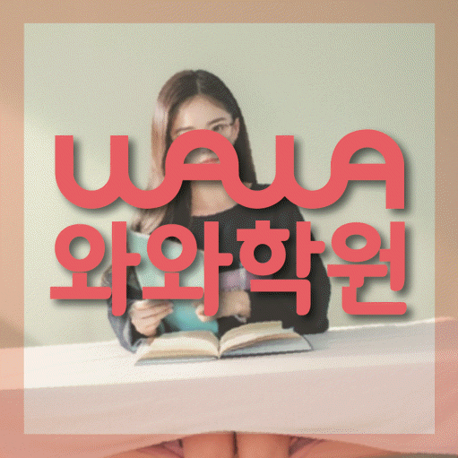

국어 수업 가능 학년
초1 · 초2 · 초3 · 초4 · 초5 · 초6 · 중1 · 중2 · 중3 · 고1 · 고2 · 고3
ACADEMIC SUPPORT LOCAL GUIDE
봉산동 보습학원 선택 전 확인할 학생 유형, 현재 학년 학습 상태, 수업학교 자료 활용법, 수준별수업 질문, 주소 기준 등하원 계획을 안내합니다.
30초 핵심 안내
대구 중구 봉산동에서 보습학원을 검색한 학부모가 가장 먼저 확인할 답은 “우리 아이가 막히는 지점을 설명할 수 있는가”입니다. 좋아하는 단원에서는 자신감이 있지만 틀린 문제를 답만 확인하고 다시 풀지 않는 학생이라면 선행량보다 오답을 원인별로 분류한 뒤 답을 가리고 다시 푸는 재확인 절차를 우선 검토하고, 수준별수업도 홍보 표현이 아니라 적용 절차와 확인 방법으로 질문하는 편이 좋습니다. 봉산동의 제공 수업 장소는 대구 중구 대봉로 253 3층 와와학습코칭학원입니다. 봉산동에서 등록 전에는 출발 지점별 이동과 수업 종료 후 귀가 계획까지 맞춰 보아야 합니다.
봉산동은 수업 가능 생활권 기준입니다. 실제 방문 센터는 와와학습코칭센터 반월당점이며, 주소와 등록 정보는 아래 센터 기준 정보에서 확인할 수 있습니다.
초1 · 초2 · 초3 · 초4 · 초5 · 초6 · 중1 · 중2 · 중3 · 고1 · 고2 · 고3
초1 · 초2 · 초3 · 초4 · 초5 · 초6 · 중1 · 중2 · 중3 · 고1 · 고2 · 고3
초1 · 초2 · 초3 · 초4 · 초5 · 초6 · 중1 · 중2 · 중3 · 고1 · 고2 · 고3



대구 중구 대봉로 253 3층 와와학습코칭학원(센트로팰리스 대백마트 맞은편)
센터 기준 정보
센터명·주소·등록 정보와 교습비 확인 경로를 상담 전에 살펴볼 수 있도록 정리했습니다.
대구 중구 봉산동 상담 기준
대구 중구 대봉로 253 3층 와와학습코칭학원
대구광역시동부교육지원청 제6834호
실제 수업 가능 시간은 학년·과목별 일정에 따라 상담에서 확인합니다.
동네명은 수업 가능 지역을 찾기 위한 안내 기준입니다.
대구초 · 사대부초
대구제일중 · 사대부중
사대부고 · 경북여고
센터명·주소·등록번호·가능 학년·학교 참고 정보는 제공된 센터 자료를 기준으로 정리했으며, 실제 수업 범위와 일정은 상담에서 다시 확인합니다.
지역별 학습 안내
학생의 과목별 학습 상황과 상담 전에 확인할 기준을 여섯 가지 주제로 나누어 정리했습니다.
검색 기준 지역은 대구 중구 봉산동이지만 제공된 학원 주소는 대구 중구 대봉로 253 3층 와와학습코칭학원이므로 동네 키워드만으로 거리를 판단해서는 안 됩니다. 봉산동 학부모는 지도상의 직선거리보다 학교에서 학원, 학원에서 가정으로 이어지는 실제 순서를 확인하는 편이 좋습니다. 대구 중구 봉산동의 생활 동선을 따져 보면 수업 전 식사나 돌봄 일정, 종료 후 귀가 방법, 시험 기간의 시간표 변경 가능성까지 한 주 일정에 넣어 보십시오. 봉산동 학생의 귀가 시간을 기준으로 이동 부담이 학습 시간을 잠식하지 않아야 보습학원의 복습과 과제가 생활 안에서 유지될 수 있습니다.
좋아하는 단원에서는 자신감이 있지만 틀린 문제를 답만 확인하고 다시 풀지 않는 학생은 “공부를 안 한다”는 한 문장으로 설명하기 어렵습니다. 봉산동 맞힌 문제 수 외에도 첫 풀이까지의 시간, 질문 빈도, 과제를 남긴 이유를 구분해야 잘못된 진단을 피할 수 있습니다. 봉산동에서 우선 적용할 방법은 오답을 원인별로 분류한 뒤 답을 가리고 다시 푸는 재확인 절차입니다. 대구 중구 봉산동 학생은 현재 학년 내용을 자신의 말로 설명하고 비슷한 문제를 혼자 풀 수 있는지를 확인한 뒤 다음 진도를 정하는 편이 안전합니다.
“수준별수업”은 시간대나 수업 이름만으로 적합성을 판단하기 어렵습니다. 봉산동에서 수준별수업을 확인할 때는 참여 인원, 질문 방식, 개별 풀이 확인, 과제와 오답 처리, 결석 시 대체 방법을 같은 순서로 비교하십시오. 봉산동의 수준별수업 관련 안내에서는 오답 재풀이가 부족한 학생에게는 수업 형식보다 집중이 끊기거나 이해가 막혔을 때 교사가 어떻게 발견하고 개입하는지가 중요합니다. 봉산동 학부모는 수준별수업이 생활 일정과 맞는지뿐 아니라 수업 후 혼자 복습할 자료와 피드백이 남는지도 확인해야 합니다.
제공 자료에서 봉산동 수업학교로 대구초, 사대부초 등이 안내되어 있습니다. 봉산동 학부모가 학교별 계획을 세울 때에는 명칭보다 학생이 받은 최신 범위 자료를 우선해야 합니다. 대구 중구 봉산동의 현재 학년 진도, 수행 과제, 이전 시험 오답과 남은 기간을 한 표에 넣으면 학교 대비와 누적 복습의 비중을 조정하기 쉽습니다. 봉산동 이 안내에는 전달받은 학교만 포함되고 그 외 학교의 수업 가능 여부는 별도 확인이 필요합니다.
평가 결과만 기다리지 않아도 봉산동 학생의 학습 과정에서 확인할 지표가 있습니다. 봉산동에서 점수 밖의 변화를 확인하려면 정해진 시간에 시작하는지, 질문 표시가 늘었는지, 과제 미완료 이유를 말하는지, 답을 가리고 재풀이하는지를 주간 단위로 비교해 보십시오. 봉산동 학생의 재풀이 기록을 기준으로 오답 재풀이가 부족한 학생의 핵심 지표는 답을 가린 재풀이 완료율과 같은 실수의 재발 빈도입니다. 봉산동 학습 기록에서는 이 기록이 안정되지 않은 상태에서 문제량만 늘리면 변화의 원인을 알기 어려우므로 현재 학년의 필수 행동부터 확인해야 합니다.
대구 중구 봉산동 상담에서 비교 가능한 답을 얻으려면 모든 학원에 같은 질문을 해야 합니다. 봉산동의 실제 생활표를 놓고 보면 현재 학년 진단은 어떤 자료로 하는지, 수업 중 혼자 푸는 시간은 있는지, 과제 미완료와 반복 오답을 어떻게 처리하는지, 보호자 피드백은 언제 오는지 순서대로 확인하십시오. 수준별수업에는 비용이나 이용 조건이 섞일 수 있으므로 총액, 기간, 변경 기준을 별도 메모로 남기는 편이 좋습니다. 봉산동 학부모는 “가능하다”는 답보다 누가, 언제, 어떤 기록으로 관리하는지를 구체적으로 묻는 것이 유용합니다.
FAQ
학생에게 필요한 조건인지 살펴보려면 과제·오답·피드백 과정에서 어떻게 활용되는지 확인해야 합니다. 좋아하는 단원에서는 자신감이 있지만 틀린 문제를 답만 확인하고 다시 풀지 않는 학생이라면 올해 진도에서 보완할 지점을 나누어 보고 오답을 원인별로 분류한 뒤 답을 가리고 다시 푸는 재확인 절차를 실제 수업과 과제에 연결하는지를 우선 확인하는 편이 좋습니다.
같은 학교나 학년이라도 평가 자료가 달라질 수 있어 목록 밖 학교는 교재와 학년을 전달해 수업 가능 여부를 확인해야 합니다. 봉산동 페이지에 제공된 학교 정보는 대구초, 사대부초입니다. 같은 봉산동 지역이라도 학교 자료가 다를 수 있으므로 실제 범위와 교재를 먼저 확인하고, 목록 외 학교는 센터에 수업 가능 여부를 문의하는 편이 안전합니다.
안내 문구를 실제 계획과 연결하려면 학생 일정과 학습 상태에 실제로 맞는지 구분해야 합니다. 봉산동 상담에서는 수업 인원, 질문 방식, 개별 풀이 확인, 과제·오답 처리와 결석 시 대체 방법이 학생에게 맞는지 비교하십시오.
공통 개념과 학교별 범위를 구분하려면 학생이 가져온 최근 시험지와 과제 공지를 먼저 대조해야 합니다. 봉산동 상담에서는 학생마다 시작 수준·시험 난도·학습 기간이 다르므로 성적 변화 폭을 미리 확답할 수 없습니다. 봉산동 학생은 답을 가린 재풀이 완료율과 같은 실수의 재발 빈도 같은 과정 지표와 학교 평가를 함께 추적하며 계획을 조정하는 설명이 더 현실적입니다.
공통 개념과 학교별 범위를 구분하려면 학교명보다 학생의 실제 자료로 준비 순서를 다시 정해야 합니다. 봉산동 페이지에 제공된 주소는 대구 중구 대봉로 253 3층 와와학습코칭학원입니다. 봉산동에서는 학교에서 출발하는 날과 집에서 출발하는 날을 나누고, 가장 늦은 요일의 수업 종료·귀가 시간과 편의 서비스 제공 여부를 확인해야 합니다.
상담 상황 예시
봉산동 상담에서는 학생에게 질문하기 편한지, 숙제량을 감당할 수 있는지, 귀가가 부담스럽지 않은지를 따로 물어본 점이 좋았습니다. 봉산동에서 학원을 고를 때 성적 약속보다 첫 주에 실천할 학습 항목을 보는 이유를 이해하게 됐습니다.
봉산동에서 여러 보습학원을 비교하면서 교재명만 들었을 때보다 수업 전 진단, 혼자 풀이, 오답 재확인 순서를 들었을 때 차이를 알기 쉬웠습니다. 봉산동에서 아이에게는 오답을 원인별로 분류한 뒤 답을 가리고 다시 푸는 재확인 절차가 필요하다는 설명을 듣고, 집에서는 과도하게 개입하기보다 실행 여부만 확인할 수 있었습니다.
대구 중구 봉산동에서 학원을 비교하는 상황을 가정한 예시 후기입니다. 이 문안은 봉산동 관련 예시이며 실제 수강생의 성적이나 입시 결과를 주장하지 않습니다.